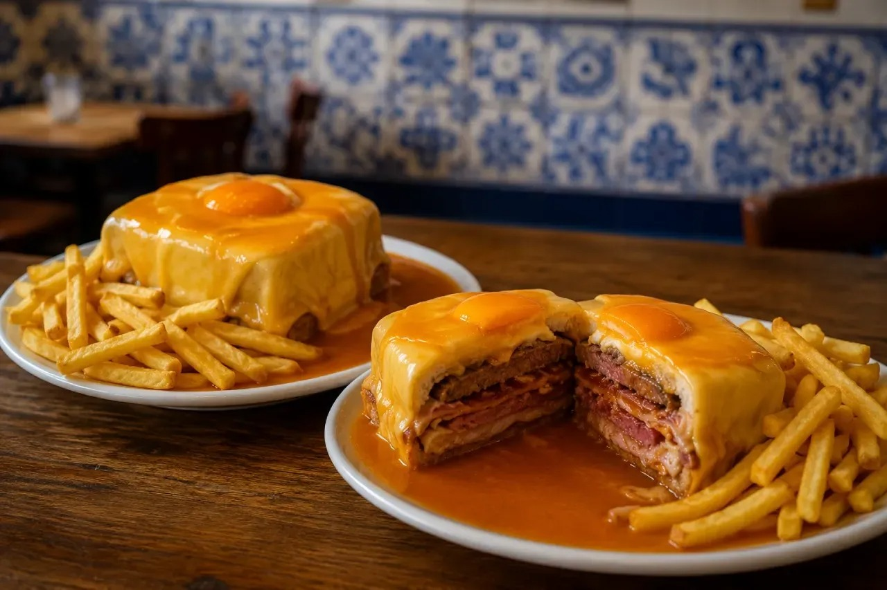

Porto
Prato Típico
Francesinha

Criada na década de 1950 como uma adaptação portuense do croque-monsieur francês, a Francesinha tornou-se o prato mais icónico da cidade. É composta por fatias de pão de forma recheadas com bife de novilho, linguiça, salsicha fresca e fiambre, coberta com queijo derretido e banhada num molho quente ligeiramente picante à base de tomate, cerveja e especiarias.
- Acompanhamento clássico: Batatas fritas e ovo estrelado no topo.
- Harmonização sugerida: Cerveja fina de pressão bem gelada.